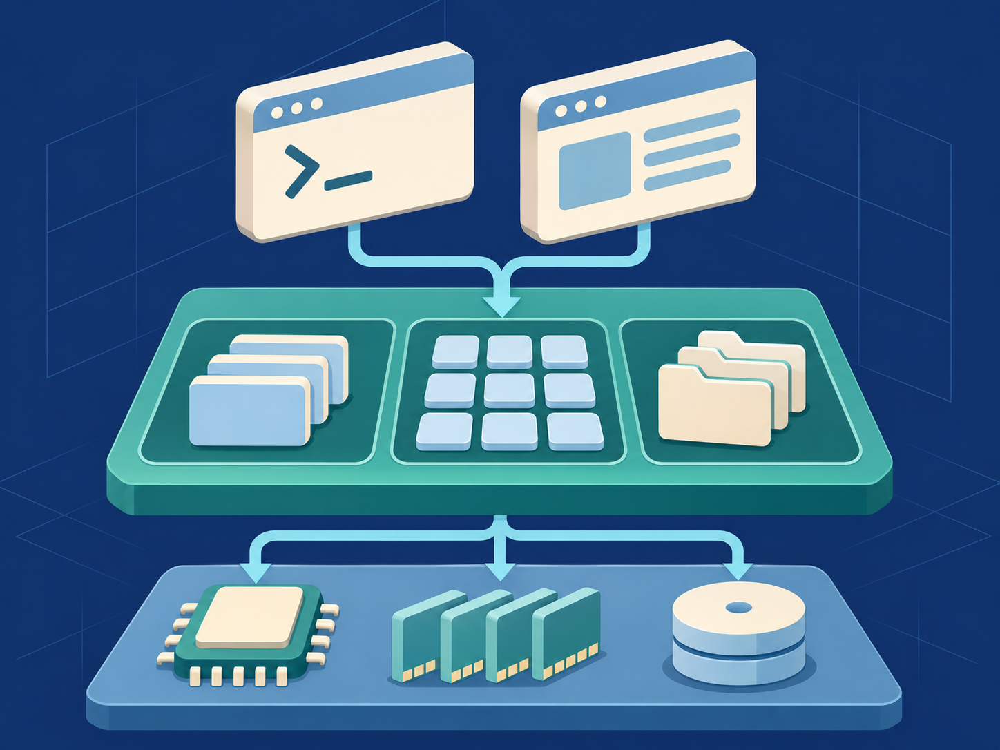

A small operating system. One idea at a time.
Understand an OS
by changing its code.
Read real xv6 source. Change one small thing. Compile it and run the result in your browser.
Basic C reading is a prerequisite. C skills and focused refreshers ↓

C you’ll need
You should be comfortable reading small C programs: variables, conditions, loops, function calls and return values.
New to C or feeling rusty? Use these focused C Foundry refreshers: Program structure (new tab), Conditions (new tab), Loops (new tab) and Functions (new tab).
Short, expandable C reminders explain pointers, arrays and structs where the lessons use them, with optional links for more practice. Read the reminder here to keep your place in the lab.
xv6 uses its own headers and system calls. We introduce those interfaces here; C Foundry’s standard-library file functions are not a prerequisite.
Choose a chapter
99 available lessons. Open a chapter to explore one idea at a time.
Programs and system calls
6 lessons · Available now
Start with a running user program. Follow its request into the kernel, then change the answer the kernel returns.
- 01A running program is a processDistinguish a program’s source from a running process.
- 02The kernel writes your bytesSee that write sends a specified number of bytes to an output.
- 03A system call returns a resultRead the process identifier returned by getpid.
- 04ecall crosses into the kernelFollow getpid from its C call through the RISC-V ecall instruction.
- 05The kernel finds the current processConnect myproc() with the process record belonging to the caller.
- 06A returned value is not the stored valueChange the system-call answer while leaving the process record unchanged.
Processes
6 lessons · Available now
Create a child, collect its result, and follow one process as it replaces the program it runs.
- 01fork creates a child processFollow one fork call as two processes continue from it.
- 02wait collects an exited childUse wait to collect a child that has finished.
- 03A child returns an exit statusDistinguish wait’s returned PID from the child’s exit status.
- 04Parent and child have separate memoryObserve a child change its own copy of an ordinary variable.
- 05exec replaces the programRun another executable while keeping the same process identity.
- 06A failed exec leaves the caller runningHandle exec returning -1 when it cannot load the requested program.
Memory
6 lessons · Available now
Grow and map user memory, then follow the boundary between valid access, checked copies and process faults.
- 01sbrk grows the process memoryRequest more user memory and interpret the old break returned by sbrk.
- 02Memory is mapped in pagesConnect adjacent user addresses with the kernel’s page mappings.
- 03New user pages start at zeroObserve the zeroing performed when xv6 allocates user pages.
- 04Shrinking releases user pagesReturn allocated memory and observe the restored break.
- 05A user fault is containedSee a bad user access end the child while its parent survives.
- 06The kernel checks user pointersDistinguish a checked syscall copy from a direct invalid user load.
Files
6 lessons · Available now
Follow descriptors through open files and inodes, then verify bytes through the filesystem write path.
- 01A descriptor is a process-local handleObserve open allocate a descriptor and close make that slot reusable.
- 02Reads advance an open file’s offsetFollow two reads through successive bytes of a regular file.
- 03dup shares the open fileDistinguish a second descriptor from a separate open-file offset.
- 04unlink removes a nameRead an already-open file after removing its directory entry.
- 05Two names can identify one inodeObserve hard links and separate link counts from open references.
- 06Writes pass through filesystem transactionsFollow a regular-file write through the filesystem and verify its bytes.
Pipes
6 lessons · Available now
Connect processes with byte streams, close their ends correctly, and build a small redirected pipeline.
- 01A pipe connects two descriptorsSend bytes from a pipe’s write end to its read end.
- 02EOF needs an empty pipe and closed writersDistinguish buffered bytes from end of file.
- 03fork inherits the pipe endsConnect parent and child while closing their unused ends.
- 04Pipes are byte streamsObserve that read boundaries need not match write boundaries.
- 05A pipe reader can blockFollow a reader waiting for a producer to supply a byte.
- 06Redirection changes the destinationRun echo with its standard output connected to a pipe.
Scheduling
6 lessons · Available now
Observe timer waits, process states, wakeups, cancellation and the locks protecting shared kernel objects.
- 01Sleep waits for guest timer ticksObserve a timed sleep without treating it as a browser performance measurement.
- 02Runnable processes take turnsObserve progress by two child processes without assuming an exact output order.
- 03Waiting is a process stateInspect the parent sleeping in wait while its child runs.
- 04Wakeup makes a process runnableConnect a pipe condition change with the scheduler’s runnable state.
- 05A killed sleeper must run to exitFollow cancellation from the killed flag through runnable state to exit.
- 06Locks protect shared kernel stateConnect correct pipe byte accounting with a protected kernel critical section.
Boot and kernel organization
6 lessons · Available now
Go inside the kernel: change its real boot function, then follow stacks, privilege, paging, allocation and the first user process.
- 01The kernel boots before user programsChange the real kernel boot function and distinguish boot output from program output.
- 02C needs a stack before it can runFollow the initial per-hart stack calculation in the entry assembly.
- 03Paging is enabled during bootObserve the translation mode before and after the kernel installs its page table.
- 04The allocator supplies physical pagesAllocate, use and release a real kernel page after allocator initialization.
- 05Initialized records are not running processesDistinguish preparing the process table from allocating and scheduling a process.
- 06Boot prepares the first user processFind the first runnable process before the scheduler starts executing it.
Address translation
8 lessons · Available now
Walk real Sv39 entries, read permissions, compare address spaces, and connect guard faults with checked memory copies.
- 01A virtual address selects indices and an offsetSplit an address into the fields used by Sv39 translation.
- 02A page-table walk follows physical page addressesRead the real entries along a mapped user address’s translation path.
- 03A valid mapping still has access permissionsDistinguish validity, user access, writability and executability in actual PTEs.
- 04The kernel maps RAM and device registersObserve an identity mapping and distinguish executable text from device memory.
- 05A guard page catches an invalid user accessConnect a cleared U bit with a real, contained user page fault.
- 06The trampoline has a shared virtual locationCompare the actual trampoline and trapframe mappings across user and kernel page tables.
- 07The kernel translates user pointers before copyingFollow a checked user-memory copy through walkaddr and its U-bit check.
- 08A copy must check each page it crossesObserve a checked copy stopping at an unmapped boundary after copying an initial byte.
Traps and system-call machinery
6 lessons · Available now
Change the real trap, dispatcher and argument-decoding functions, then follow the return to protected user execution.
- 01A trapframe preserves user registersRead saved user state without confusing it with the kernel’s live registers.
- 02The trap cause selects a handling pathObserve a user ecall’s cause before enabling nested kernel interrupts.
- 03Returning must skip the ecall instructionSee why a syscall return must resume after ecall rather than repeat it.
- 04Dispatch selects a kernel functionFollow the syscall number through the real function-pointer table.
- 05Argument helpers decode saved registersChange a decoded integer argument while leaving the user request unchanged.
- 06Returning to user mode restores a protected contextConnect the return-mode bits to actual execution, and distinguish a kernel panic from a contained user fault.
Interrupts and device drivers
8 lessons · Available now
Follow timer and device interrupts through controller acknowledgements, real UART registers, console buffering and disk completion.
- 01Timer interrupts advance a kernel counterConnect the machine timer path to xv6’s software tick counter.
- 02An enable bit controls supervisor interrupt deliveryObserve the supervisor interrupt-enable state around a bounded kernel probe.
- 03The interrupt controller identifies a deviceObserve real PLIC claims and completions for disk and UART interrupts.
- 04A device register is accessed through an addressRead real UART configuration and status registers through MMIO.
- 05Buffered output separates a writer from the UARTChange a byte entering the actual kernel transmit ring.
- 06The console edits a line before readers consume itObserve real console-buffer editing and newline commitment.
- 07Descriptors tell the device which memory to useRead the actual request direction and device-write flag in a submitted VirtIO chain.
- 08A disk request completes through an interruptObserve the boundary between device completion and a cache buffer becoming valid.
Context switching
6 lessons · Available now
Follow saved kernel contexts, stack ownership, scheduler contracts, timer preemption and the sleep lock handoff.
- 01A kernel context saves a call boundaryDistinguish the small swtch context from a saved user trapframe.
- 02A suspended kernel thread has its own stackLocate the real saved kernel stack pointer after a scheduling round.
- 03Yield changes state before switching awayObserve the runnable-to-running transition around a real context switch.
- 04Sched checks the handoff contractTrigger a real guard against switching without the process lock.
- 05The timer can preempt user computationConnect a real user timer interrupt to yield without a cooperative syscall.
- 06Sleep transfers protection before releasing a condition lockObserve the overlap that prevents a lost wakeup.
Locks and coordination
7 lessons · Available now
Follow atomic claims, ownership, interrupt nesting, publication, sleeping locks and the protocols that prevent lost wakeups and deadlock.
- 01An atomic swap returns the old valueObserve the read-and-write operation used to claim a spinlock.
- 02A spinlock records its owning CPUDistinguish a set lock word from this CPU’s ownership of it.
- 03Nested critical sections restore the previous interrupt stateObserve that the outermost pop restores the original enable state.
- 04Locks order the publication of protected stateConnect payload visibility to the ordering inside acquire and release.
- 05A sleeping lock can stay held across blocking workObserve process ownership while its internal spinlock is released.
- 06A wakeup needs the matching channelObserve that changing a condition does not itself wake a sleeping process.
- 07Lock order prevents circular waitRecognize a self-cycle and extend the reasoning to multiple locks.
Filesystem structure
8 lessons · Available now
Follow disk regions, buffer and inode caches, directory traversal, allocation, block mapping and reclamation.
- 01The superblock describes disk regionsDistinguish the whole image from its data-block region.
- 02The buffer cache reuses a block’s identityObserve a cached buffer without confusing its address with a disk block number.
- 03References keep cache buffers residentObserve real pin counts and balance their lifetime.
- 04An inode reference can precede loaded metadataObserve lazy inode loading at ilock.
- 05A path starts at root or the current directoryFollow directory traversal from its selected starting inode.
- 06The bitmap tracks block ownershipObserve the bit changed by actual allocation and freeing.
- 07An indirect block extends a file’s block mapFollow the transition from the last direct pointer to an indirect entry.
- 08Truncation releases a file’s block mapDistinguish removing file data from removing a directory name.
Logging and recovery
6 lessons · Available now
Reserve journal capacity, absorb block updates, find the commit point and run actual boot replay.
- 01Filesystem operations reserve log spaceObserve outstanding operations before balanced completion.
- 02The log absorbs repeated updates to one blockObserve that a repeated log_write does not add another pin.
- 03The last outstanding operation triggers commitObserve pending changes before and after the final end_op.
- 04The journal header marks the commit pointObserve the real header before and after write_head.
- 05Boot replays a committed journalRun xv6’s actual recovery on a prepared interrupted-install image.
- 06Redo replay can be repeated safelyInstall the same committed block image twice before clearing the header.
Loading programs and integration
8 lessons · Available now
Load real ELF segments, initialize BSS, construct arguments and entry state, handle exec failure and connect the complete system.
- 01An ELF header identifies an executableRead the real file header checked by exec.
- 02A segment’s memory size can exceed its file bytesRead PT_LOAD sizes from the native BSS fixture.
- 03The loader supplies zero bytes for BSSChange actual page initialization before loading a native NOBITS object.
- 04Exec builds a new argument vectorFollow copied strings and user pointers into the replacement program.
- 05Exec establishes the entry stackChange the real saved entry stack pointer and observe the ABI alignment.
- 06A failed exec preserves the old imageObserve failure returning to the caller with its old memory intact.
- 07The shell composes kernel interfacesBuild redirection with fork, descriptors and exec.
- 08Follow a byte from a process to disk and backConnect process, pipe, file, journal and loader paths in one working program.
Keep exploring
All 15 chapters are available. Revisit any lesson, make another change, or use the kernel explorer for deeper experiments with the running kernel.